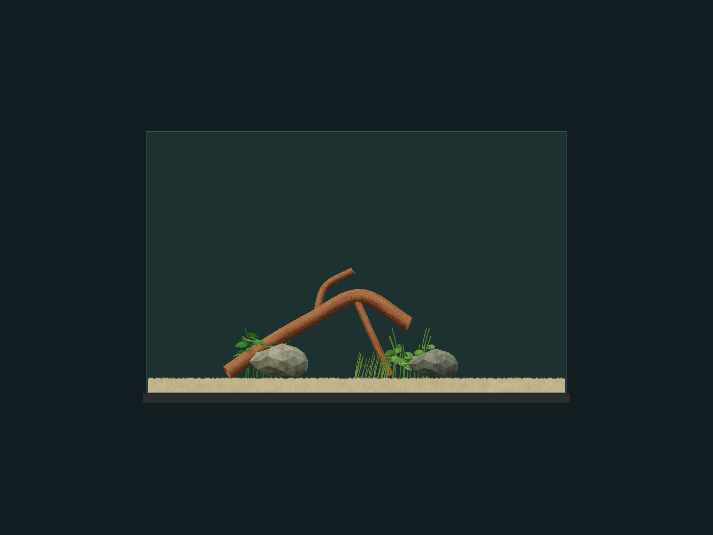
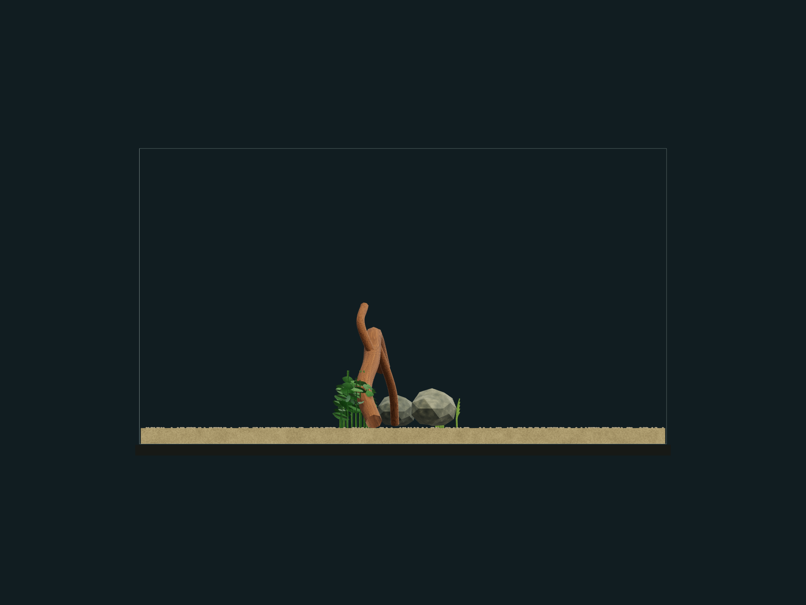
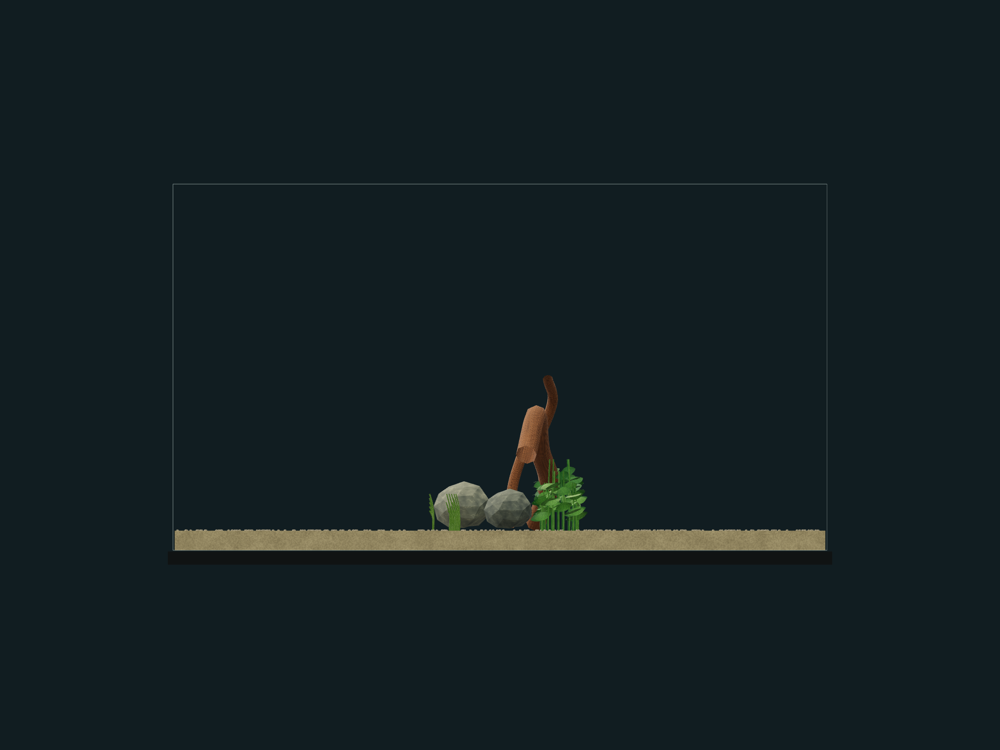
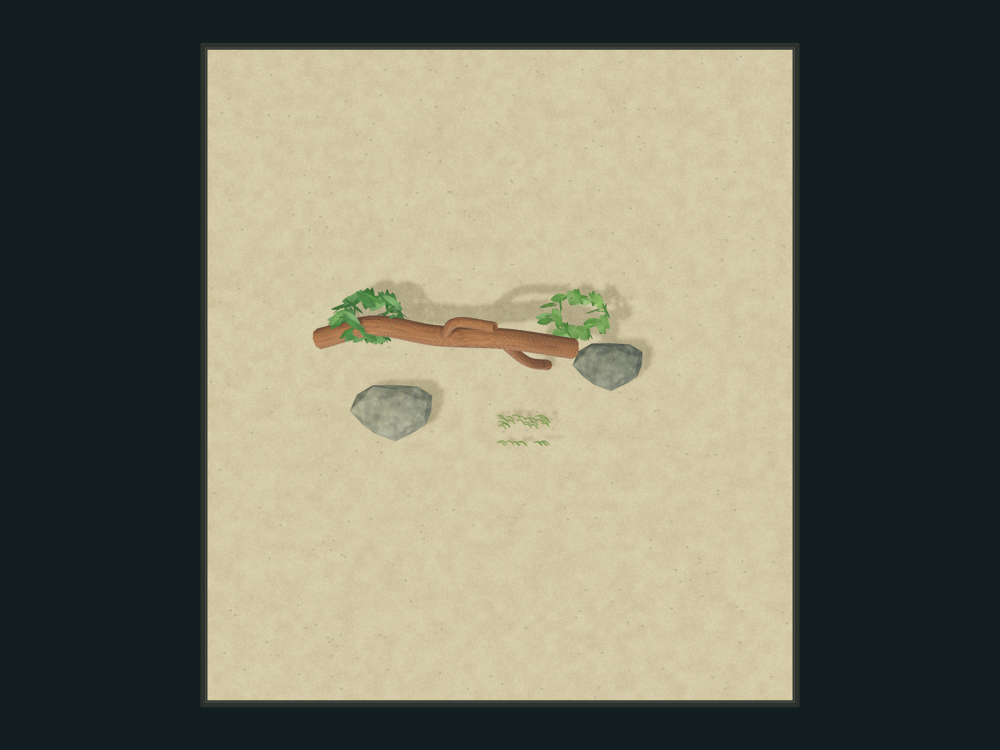
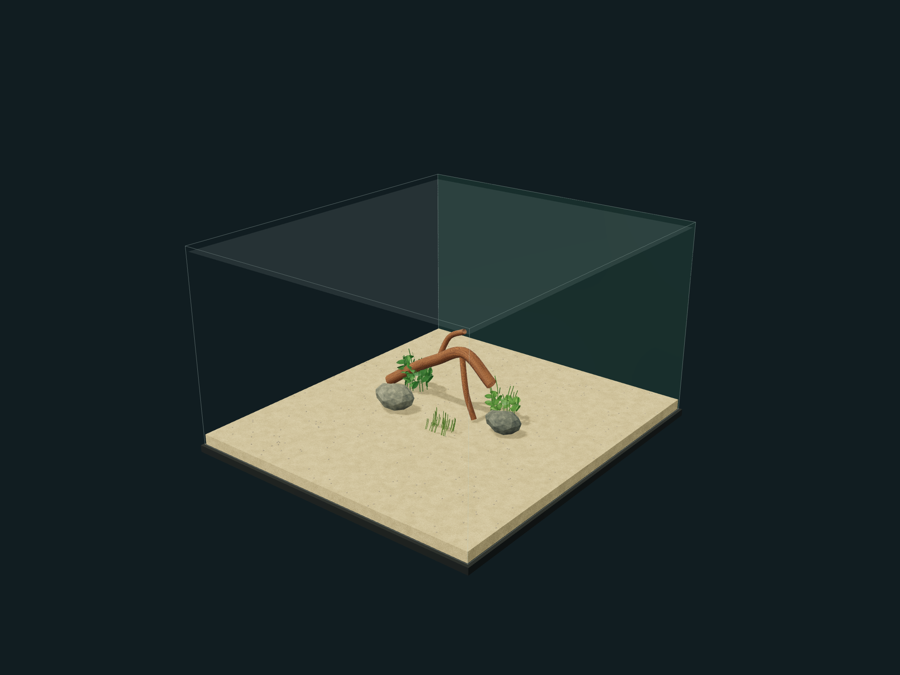

Revision 19 · 90 × 100 × 56 cm (W × D × H) · user-entered dimensions
One frozen scene. Rendered references—not photographs or measured physical fit. Room photo excluded. Front, left, right and top are orthographic at identical scale; overview is perspective.





See manifest.json for exact cameras, dimensions and SHA-256 image/data identities. scene.json includes sculpt data; no general re-import UI is provided in this release.